ניהול השכרות הוא תיק דיגיטלי לכל דירה שאתם משכירים: הבניין והדירות, השוכרים והחוזה, שכר הדירה והצ'קים, התקלות והמסמכים. הכול במקום אחד, בעברית ובאנגלית, מהמחשב או מהטלפון.
בתחתית יש שלושה כפתורים: נכס חדש מתחיל בבניין הראשון, ייבוא מאקסל מכניס הרבה דירות בבת אחת (פרק 2), ולראות קודם תיק לדוגמה פותח תיק מוכן להתנסות.
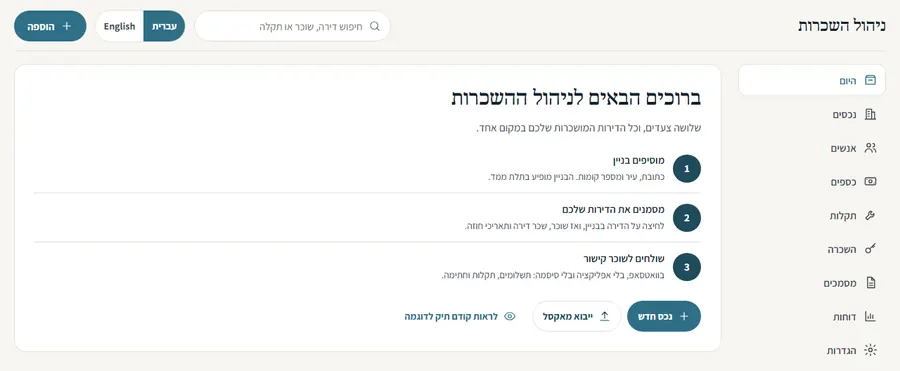
רוצים להבין איך זה מרגיש לפני שמכניסים נתונים? לחצו על לראות קודם תיק לדוגמה. נפתח תיק של בעל דירות עם שלושה בניינים וחמש דירות: שוכר באיחור, צ'קים להפקדה, תקלה דחופה, דירה פנויה עם מתעניינים. למעלה מופיע הסימון נתוני דוגמה: אפשר ללחוץ על הכול ולשנות, ושום דבר לא נשלח ולא נשמר. כשמסיימים לוחצים על חזרה לנתונים שלי.
זה המסך שנפתח בכל כניסה. למעלה ארבעה מספרים: נגבה החודש מתוך מה שצפוי, יתרה פתוחה של כל השוכרים, דירות פנויות ותקלות פתוחות. מתחתם רשימת מה צריך טיפול (פרק 4), ולידה החודש בכל דירה: כל דירה עם הצבע שלה. ירוק זה שולם, צהוב זה טרם שולם, אדום זה באיחור, ואפור זו דירה פנויה.
התפריט: היום, נכסים, אנשים, כספים ותקלות. בטלפון, תחת עוד, נמצאים גם השכרה, מסמכים, דוחות, הגדרות ומדריך. המדריך הזה נמצא שם, בתוך ניהול ההשכרות, בשפה שבה אתם עובדים. בשורה העליונה יש חיפוש של דירה, שוכר או תקלה, מעבר בין עברית לאנגלית, וכפתור הוספה לכל דבר חדש.
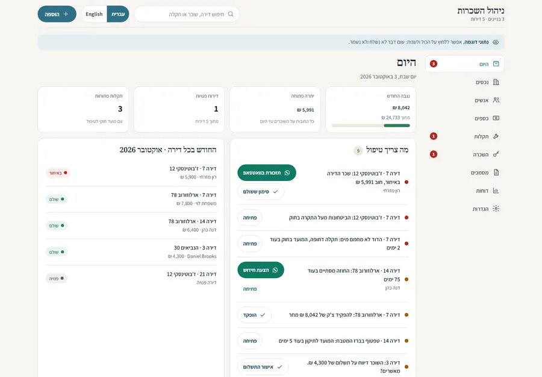
לפני השוכר הראשון, היכנסו להגדרות ומלאו:
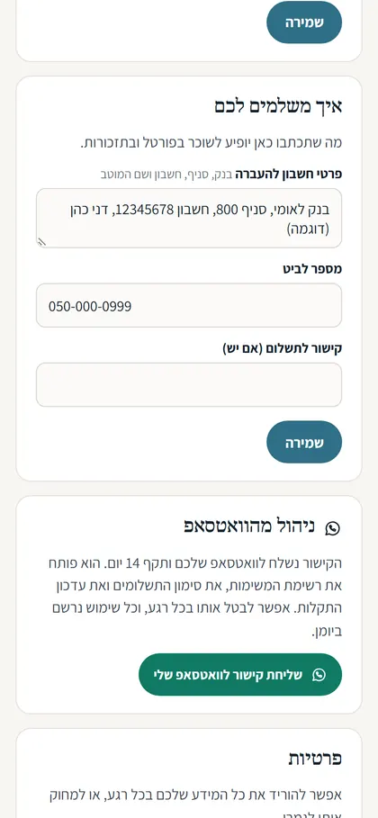
בעמוד הבניין יש שני דברים שעובדים יחד: הבניין בתלת ממד, ולידו הקומות, קומה אחרי קומה. דירה צבועה היא שלכם. ריבוע מקווקו הוא דירה שעוד לא סימנתם: לחיצה עליו פותחת דירה חדשה בקומה ובמיקום הנכונים. אפשר ללחוץ גם על דירה בבניין עצמו.
בטופס הדירה ממלאים שם הדירה (למשל דירה 7), קומה, מיקום בקומה, חדרים, מ"ר וכיוון. במיקום בקומה, 0 היא הדירה הראשונה מימין לכניסה. לדירה פנויה כדאי למלא גם שכר דירה מבוקש ופנויה מתאריך.
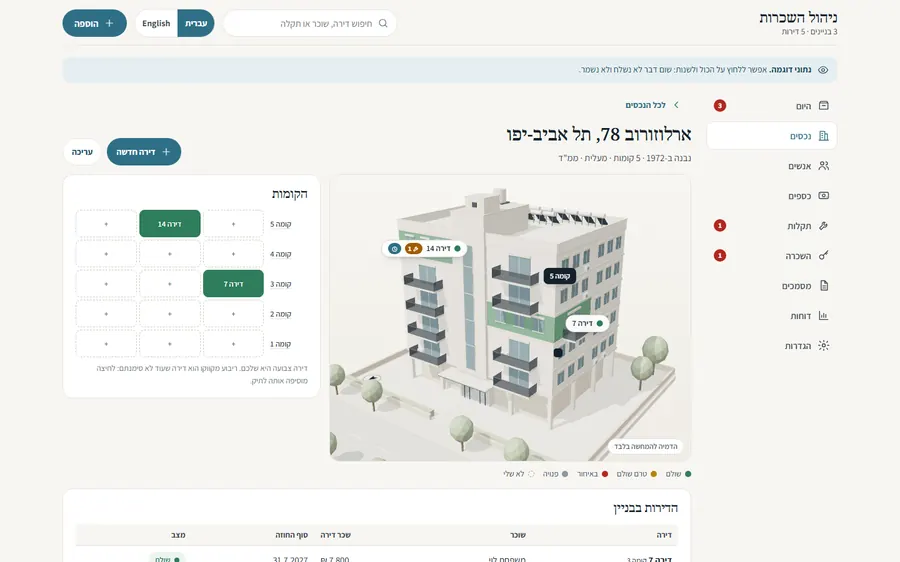
על כל דירה בבניין מופיע גם סימון כשיש בה תקלה פתוחה, או כשהחוזה שלה מסתיים תוך 90 יום. לחיצה על שם של קומה, ברשימת הקומות או על הפינה של הבניין, מבליטה את הקומה ופותחת כרטיס של הקומה: הדירות בקומה עם השוכר, שכר הדירה והחוב, סך שכר הדירה והחוב הפתוח בקומה, והתקלות הפתוחות בה. כל שורה פותחת את הדירה או את התקלה. חזרה לכל הבניין סוגר את הכרטיס.
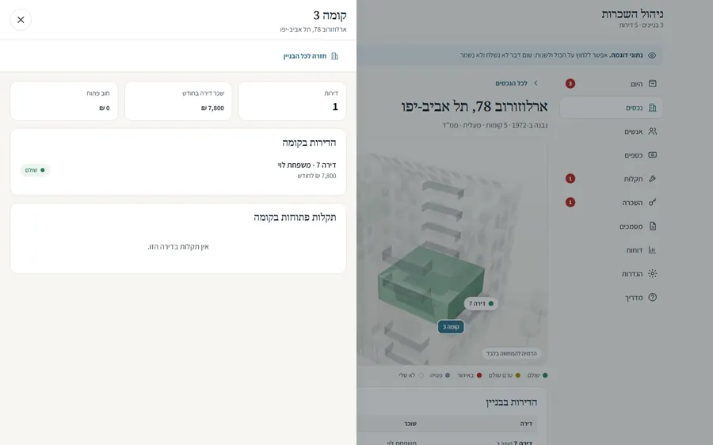
למטה בעמוד הבניין: הדירות בבניין בטבלה, הוצאות הבניין ומסמכים של הבניין, כמו פוליסת ביטוח או נסח טאבו.
לחיצה על כל דירה, בכל מקום במערכת, פותחת את הכרטיס שלה. למעלה כפתורי הפעולה: תזכורת בוואטסאפ, סימון ששולם, תקלה חדשה וקישור לשוכר. מתחתם הלשוניות: סקירה, חוזה, תשלומים, תקלות, מסמכים, יומן והדירה.
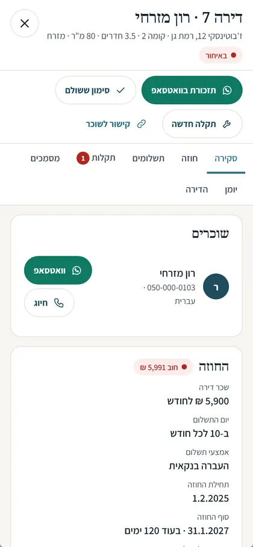
ביומן נרשם כל מה שקרה: הודעות שנשלחו, הודעות מהשוכר, חתימה, מסמך חדש. אפשר להוסיף בעצמכם רישום ביומן: הערה, שיחת טלפון, פגישה או הודעה נכנסת.
יש לכם כבר טבלה עם הדירות? אין צורך להקליד הכול מחדש.
שמות העמודות מזוהים לבד, בעברית או באנגלית. מספיק שהכותרת תהיה אחת מאלה, או תתחיל באחת מהן:
| מה בעמודה | כותרות שמזוהות |
|---|---|
| כתובת (חובה) | כתובת, רחוב |
| עיר (חובה) | עיר, ישוב, יישוב |
| דירה | דירה, שם הדירה, מספר דירה |
| קומה | קומה |
| חדרים | חדרים |
| שוכר | שוכר, שם השוכר |
| טלפון | טלפון, נייד |
| שכר דירה | שכר דירה, שכירות, סכום |
| תחילת חוזה | תחילת חוזה, תחילה, מתאריך |
| סיום חוזה | סיום חוזה, סיום, עד תאריך |
| יום תשלום | יום תשלום |
מה קורה בייבוא:
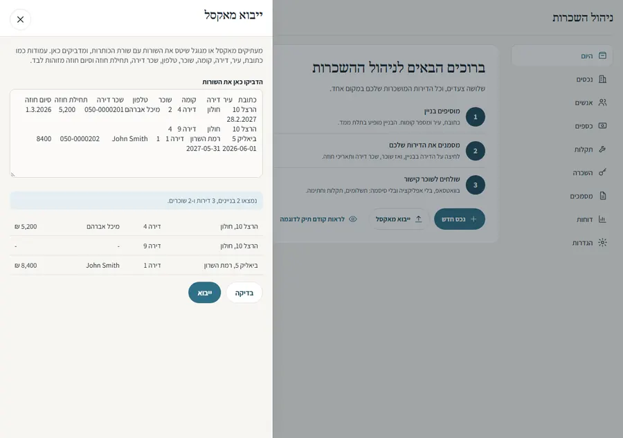
רוב בעלי הדירות מצטרפים באמצע חוזה. כדי שהמערכת לא תמציא חובות ישנים, יש שדה מיוחד. בייבוא מאקסל זה קורה לבד. כשממלאים בטופס החוזה תאריך התחלה שלפני החודש הנוכחי, מופיע השדה מעקב תשלומים מתאריך, ובו כבר רשום ה-1 לחודש הנוכחי. מהתאריך הזה נרשמים החיובים, ומה שהיה לפניו לא נספר.
אם השוכר באמת חייב משהו מלפני כן, רשמו את החוב הזה בנפרד כחיוב (פרק 4).
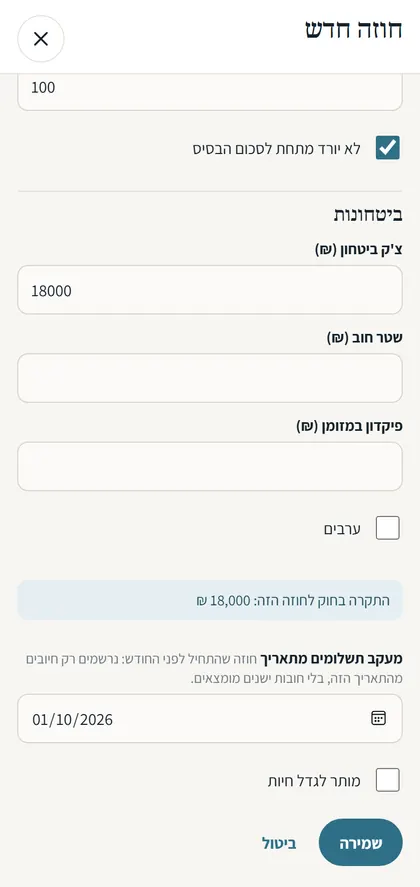
מרגע השמירה המערכת רושמת את שכר הדירה בכל חודש לבד, ביום התשלום, מראש על החודש. החיוב הראשון אף פעם לא מוקדם מתחילת החוזה.
תחת הצמדה בוחרים צמוד למדד המחירים לצרכן, ואז:
מדד הבסיס הוא של תאריך תחילת החוזה. בכל מועד עדכון המערכת מחשבת את השינוי לפי המדד הידוע, ישירות מהמחשבון של הלשכה המרכזית לסטטיסטיקה, ומשנה את החיוב לבד. בלשונית חוזה בכרטיס הדירה, הכפתור בדיקת הצמדה עכשיו מראה מה יהיה שכר הדירה המעודכן היום.
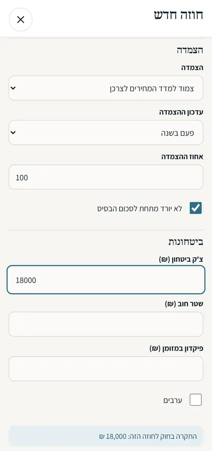
תחת ביטחונות ממלאים צ'ק ביטחון, שטר חוב, פיקדון במזומן, ומסמנים ערבים אם יש. בזמן המילוי מופיעה שורה עם התקרה בחוק לחוזה הזה. אם צ'ק הביטחון והפיקדון יחד עוברים אותה, השורה הופכת לאזהרה, והחוזה יופיע גם ברשימת המשימות.
בלשונית חוזה לוחצים החוזה להדפסה. נפתח הסכם שכירות למגורים (שכירות בלתי מוגנת), בנוי מהפרטים שמילאתם: הצדדים, הדירה, התקופה, שכר הדירה, ההצמדה, הביטחונות, האופציה והחיות. סעיף שלא רלוונטי לחוזה שלכם לא נכנס. החוזה נפתח בשפה של השוכר. בתרגום לאנגלית כתוב שהנוסח העברי הוא הקובע.
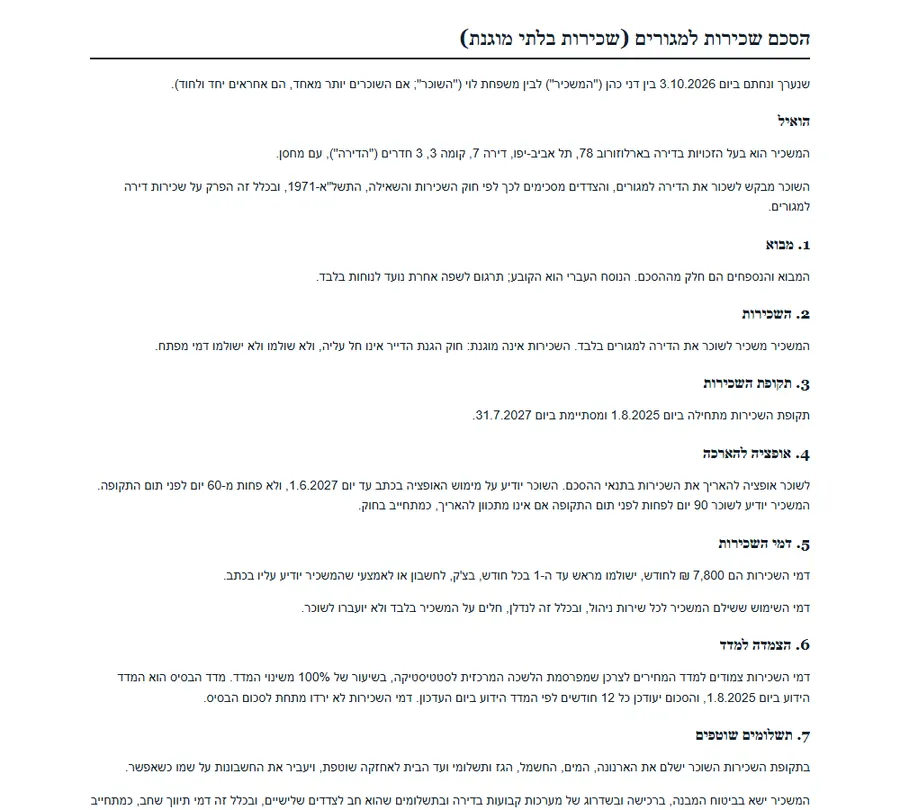
בלשונית חוזה, בכרטיס חתימה, לוחצים שליחה לחתימה. נפתחת הודעת וואטסאפ מוכנה לשוכר, בשפה שלו, עם קישור אישי שתקף 14 יום. השוכר:
עם החתימה נשמרים הנוסח המדויק שנחתם (עם טביעת אצבע דיגיטלית של הטקסט), התאריך והשעה, והקישור שדרכו נחתם. בכרטיס הדירה יופיע נחתם עם השם והשעה. חוזה שנשלח ועוד לא נחתם יופיע ברשימת המשימות, עם הכפתור שליחה חוזרת לחתימה.
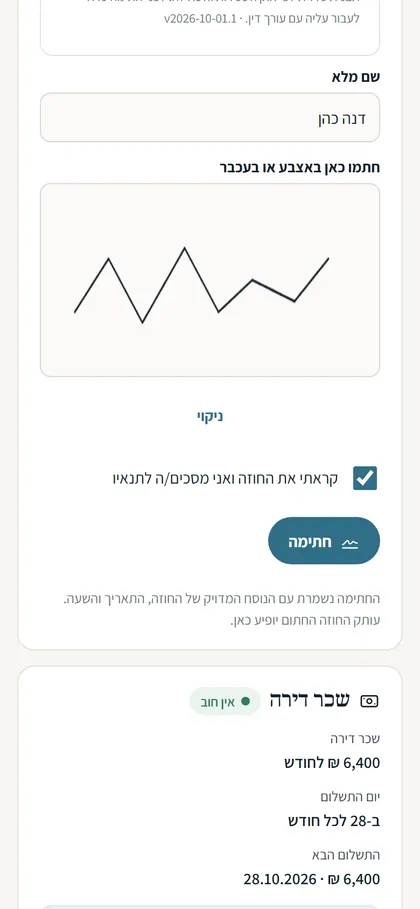
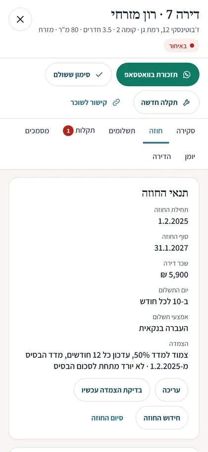
בכרטיס הדירה לוחצים קישור לשוכר. נפתחת הודעת וואטסאפ בשפה של השוכר, עם קישור אישי. לשוכר אין מה להתקין ואין סיסמה: הוא פותח את הקישור מהוואטסאפ ורואה עמוד אחד עם כל מה שצריך:
הקישור תקף עד סוף החוזה ועוד 60 יום, הזמן שבו מחזירים את הפיקדון. אין לשוכר טלפון במערכת? נפתח חלון הקישור מוכן, ואפשר להעתיק אותו או לשתף אותו בוואטסאפ.
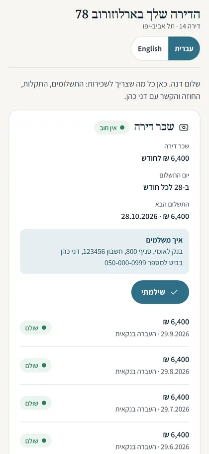
כדי לשתף מסמך עם השוכר (למשל החוזה החתום או פרוטוקול המסירה), מעלים אותו ללשונית מסמכים של הדירה ולוחצים שיתוף עם השוכר. אפשר לבטל בכל רגע בביטול השיתוף. כל קובץ נשמר מוצפן, עד 15 מגה.
במסך אנשים כל אנשי הקשר, לפי סוג: שוכרים, מתעניינים, ערבים, בעלי מקצוע. לכל איש קשר יש שפה, וההודעות אליו נכתבות בה. את מספר תעודת זהות או דרכון לא חובה למלא, והוא נשמר מוצפן. ליד כל שוכר שחייב כסף מופיע הסכום.
לכל חוזה פעיל נרשם בכל חודש חיוב של שכר דירה, ביום התשלום, מראש על החודש. תשלום שנרשם סוגר קודם את החוב הישן ביותר, ואחר כך את הבא אחריו. כך תמיד ברור איזה חודש פתוח.
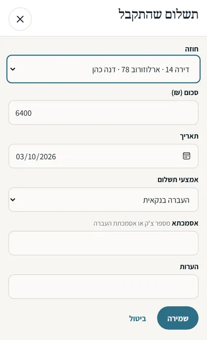
בלשונית תשלומים של הדירה יש גם אישור תשלום: מסמך להדפסה שבו אתם מאשרים לשוכר שקיבלתם את התשלום האחרון. זה אישור מבעל הדירה, ולא קבלה לצורכי מס.
בעמוד האישי שלו השוכר לוחץ שילמתי, וממלא סכום, תאריך, אמצעי תשלום ואסמכתא. הדיווח לא נספר כתשלום עד שאתם מאשרים. ברשימת המשימות מופיע: "השוכר דיווח על תשלום של... מאשרים?". בדקו שהכסף נכנס, ולחצו אישור התשלום.
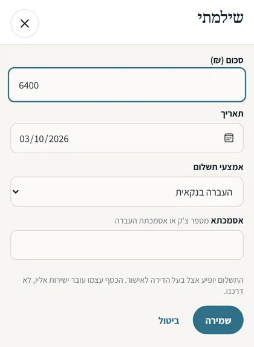
קיבלתם צ'קים לכל השנה? רשמו כל צ'ק כתשלום שהתקבל, באמצעי התשלום צ'ק, בתאריך שעל הצ'ק, עם מספר הצ'ק באסמכתא. צ'ק עם תאריך עתידי נשמר כממתין, ולא נספר עד שמפקידים אותו.
במסך כספים, בלשונית צ'קים, רואים את כל הצ'קים שאצלכם לפי התאריך. יומיים לפני התאריך מופיעה ברשימת המשימות תזכורת להפקיד. אחרי ההפקדה לוחצים הופקד.
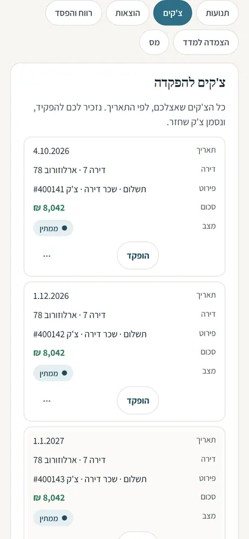
ליד כל שורה בספרים יש כפתור ⋯, פעולות על השורה. בצ'ק שחזר בוחרים צ'ק חזר. התשלום כבר לא נספר, והחודש חוזר להיות פתוח. אפשר למלא עמלת בנק לחיוב השוכר, והיא נרשמת כחיוב נפרד.
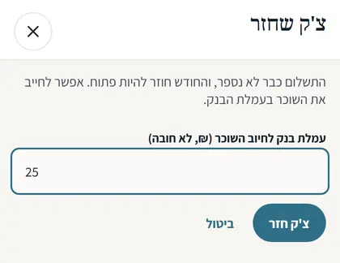
שורה בספרים לא נמחקת לעולם. רשמתם סכום שגוי? ב⋯ בוחרים ביטול השורה וכותבים סיבת הביטול. השורה נשארת עם הסימון בוטל והסיבה, ואחר כך רושמים את הנכון. כך הספרים תמיד נקיים לביקורת ולרואה החשבון.
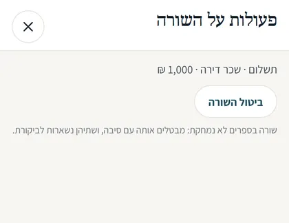
הרשימה מה צריך טיפול נבנית לבד מהנתונים שלכם, והחשוב ביותר למעלה: חוב, מועדים בחוק, תקלות. מה יכול להופיע בה:
ליד כל משימה יש הכפתור שפותר אותה: תזכורת, סימון תשלום, הצעת חידוש, הופקד, אישור. מוצגות שמונה משימות, ולהצגת כל המשימות פותח את כולן.
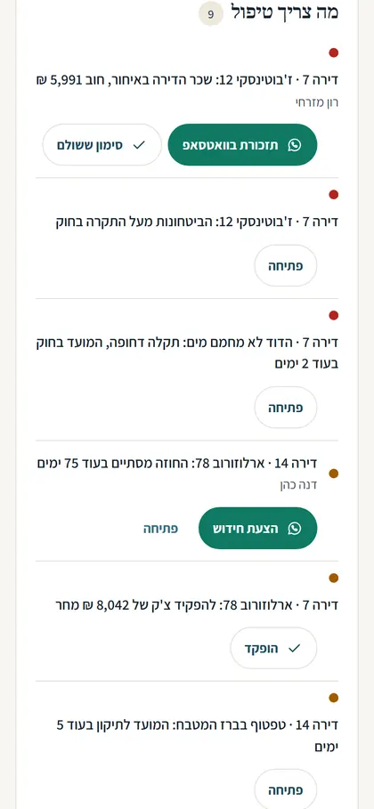
לוחצים תזכורת בוואטסאפ, ברשימת המשימות או בכרטיס הדירה. נפתחת הודעה מוכנה, ידידותית, בשפה של השוכר: הסכום, החודש, ואיך משלמים לכם (ביט, חשבון בנק או קישור, מההגדרות). אפשר לשנות את הנוסח. שליחה בוואטסאפ פותחת את הוואטסאפ שלכם עם ההודעה, ואתם לוחצים שליחה. אפשר גם העתקה.
ההודעה יוצאת מהטלפון שלכם, ונרשמת ביומן. המערכת לא שולחת הודעות לבד ולא בשמכם.
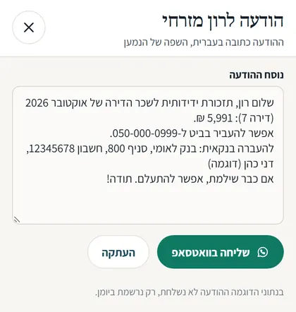
במסך היום או בהגדרות לוחצים שליחת קישור לוואטסאפ שלי (צריך קודם את המספר שלכם בהגדרות). מקבלים קישור אישי שתקף 14 יום. הוא פותח בטלפון, בלי סיסמה, את רשימת המשימות: לסמן ששולם, לאשר דיווח של שוכר, לשלוח תזכורת, לעדכן תקלה לבטיפול או טופלה, ולהוסיף הוצאה. דוחות, מסמכים והגדרות נמצאים רק בחשבון המלא.
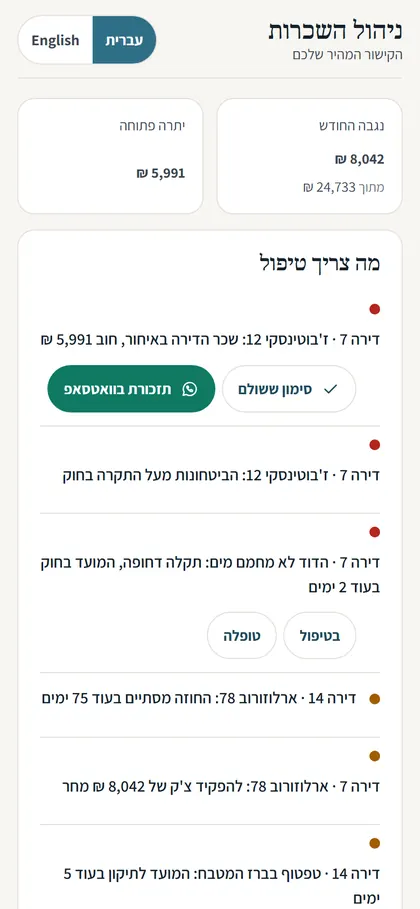
במסך כספים עוברים בין חודשים בחצים, ורואים צפוי החודש, נגבה, הוצאות ונטו. הלשוניות: תנועות, צ'קים, הוצאות, רווח והפסד של 12 החודשים האחרונים לפי נכס, הצמדה למדד ומס.
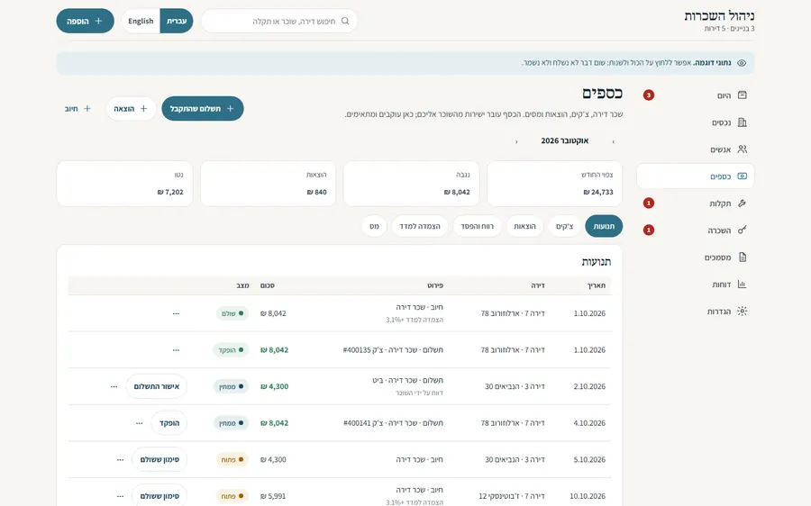
במסך דוחות יש ארבעה דוחות:
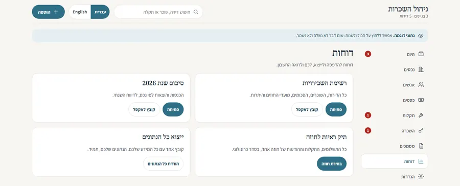
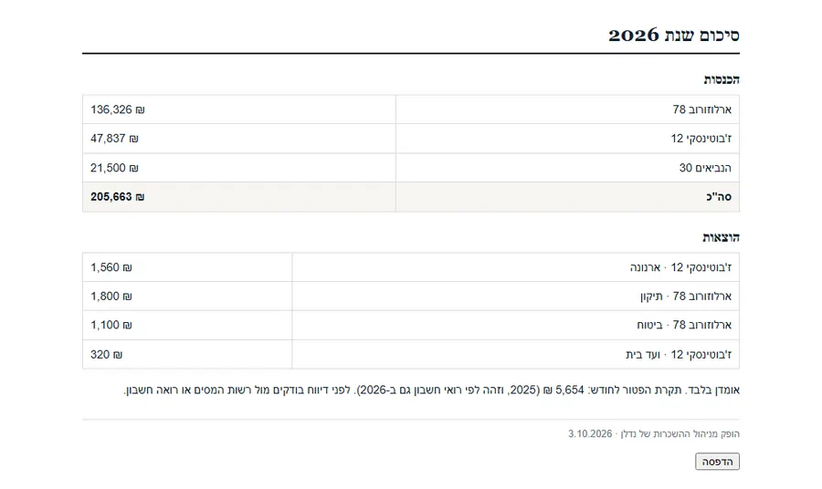
הסכומים בדוחות מחושבים לפי מה שנגבה בפועל. פיקדון שהתקבל אינו הכנסה, וחוב שנמחק אינו הכנסה.
בעמוד האישי שלו השוכר לוחץ דיווח על תקלה, כותב במשפט אחד מה קרה, ומוסיף פירוט ותמונה מהמצלמה. בשאלה האם אפשר לגור בדירה כרגיל? הוא מסמן אם התקלה דחופה, או משאיר לא בטוח/ה. בחלון יש גם הנחיה לחירום: ריח גז, ניצוצות או סדק במבנה, יוצאים מהדירה ומתקשרים לחירום. התמונה מוקטנת לפני השליחה, כך שהיא עולה מהר גם בקליטה חלשה.
התקלה מופיעה אצלכם במסך תקלות בעמודה חדשה, וברשימת המשימות. השוכר רואה את התקלה ואת התאריך שעד אליו היא צריכה להיות מתוקנת.
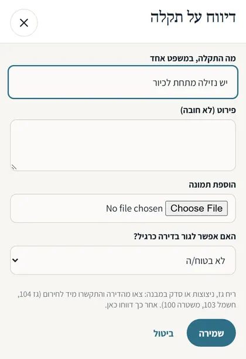
בכרטיס הדירה, או דרך הוספה, לוחצים תקלה חדשה וכותבים מה התקלה, במשפט אחד. תוך כדי הכתיבה מופיעה שורה כמו "זיהוי לפי התיאור: דוד ומים חמים · דחוף · עד 3 ימים לתיקון". בשדה דחיפות אפשר להשאיר לזהות לבד לפי התיאור, או לבחור דחוף או רגיל בעצמכם.
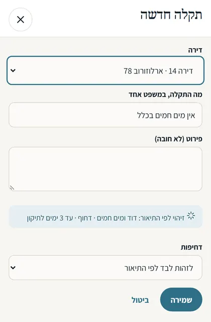
לחיצה על תקלה פותחת את הכרטיס שלה. למעלה השלבים: חדשה, תואם ביקור, בטיפול, ממתינה, טופלה. לפי סוג התקלה המערכת מציעה איזה בעל מקצוע מתאים, עם קישור לבעלי מקצוע באזור.
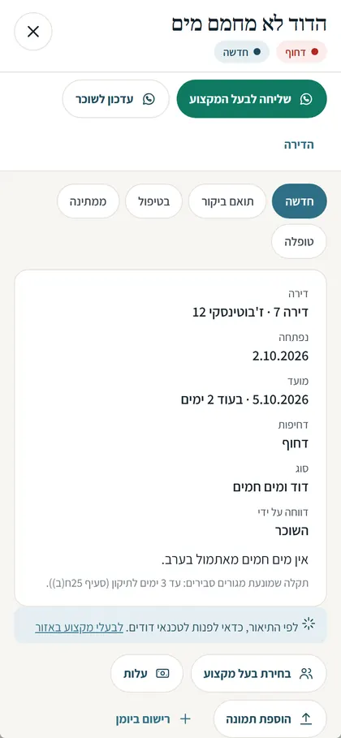
בעל המקצוע פותח את הקישור בלי סיסמה, ורואה את התקלה בלבד: הכתובת, הדחיפות, הסוג והמועד. משם הוא יכול לכתוב לכם בוואטסאפ, ולשלוח עדכון מצב: תואם ביקור, בטיפול, ממתינה או טופלה, עם פירוט, עלות ותמונה. העדכון נכנס לתקלה וליומן שלה.
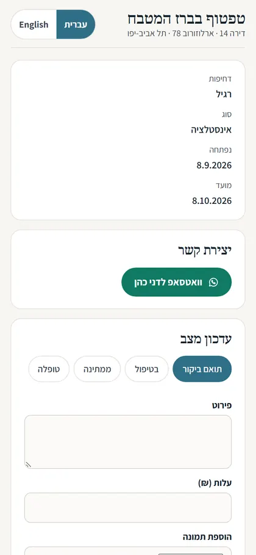
במסך תקלות כל התקלות לפי שלב, כל אחת עם המועד שלה. תקלה שעבר המועד שלה מסומנת באדום. בכרטיס התקלה, עלות שומרת כמה זה עלה. כשמעבירים תקלה עם עלות לטופלה, המערכת שואלת אם לרשום את העלות כהוצאה, כדי שתיכנס לרווח והפסד.
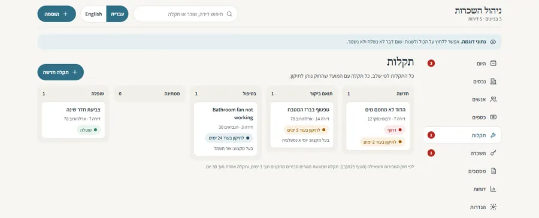
בלשונית הדירה בכרטיס הדירה: פרטי הדירה, ציור של הדירה מבפנים עם הנקודות של המכשירים, ומערכות ומכשירים. לוחצים מכשיר או מערכת ומוסיפים דוד, מזגן, לוח חשמל, מונה, מקרר, תנור, מכונת כביסה ועוד, עם יצרן, דגם, חודש ההתקנה, אחריות עד וטיפול אחרון. ליד כל מכשיר רואים אם הוא באחריות או שהאחריות הסתיימה. הכפתור תקלה במכשיר פותח תקלה חדשה עם שם המכשיר. כל עוד התקלה פתוחה, המכשיר מסומן בציור, ולחיצה עליו פותחת את התקלה.
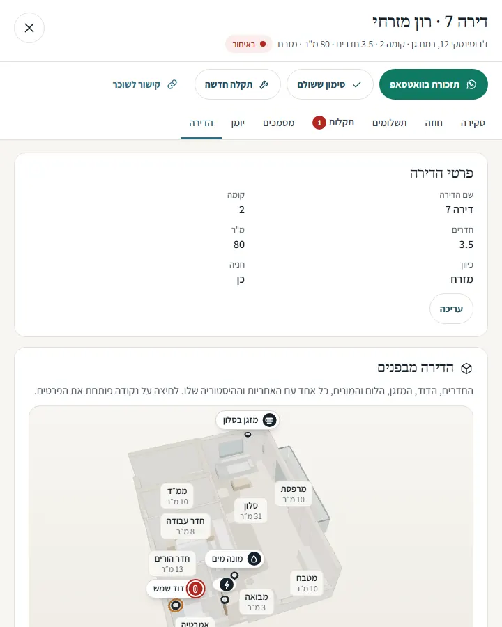
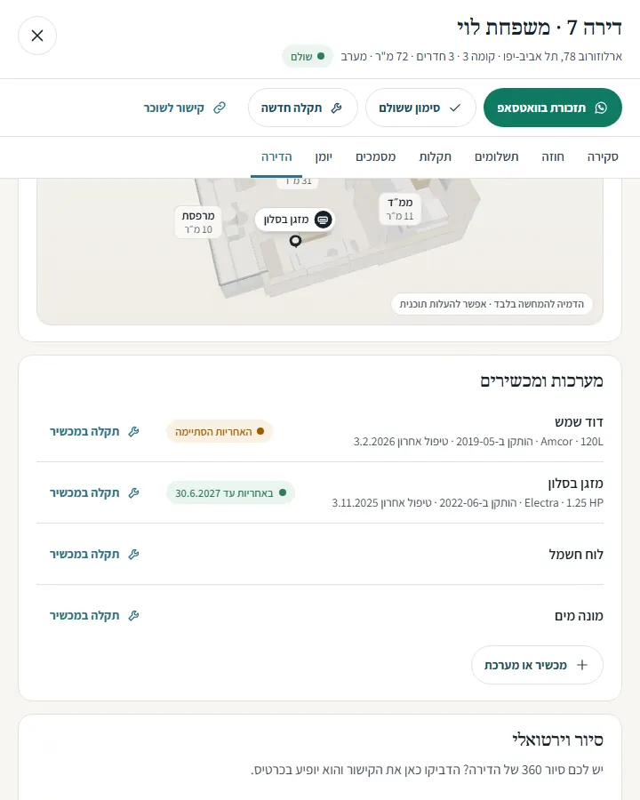
דירה מושכרת עוברת שוכרים, חידושים, עדכוני מדד ושנות מס. הפרק הזה מלווה את כל הדרך.
בלשונית חוזה, בכרטיס מועדים, רואים את התאריכים החשובים לפי הסדר:
90 יום לפני הסוף, החוזה מופיע ברשימת המשימות, עם הצעת חידוש: הודעת וואטסאפ מוכנה לשוכר. כשמסכמים, בלשונית חוזה לוחצים חידוש החוזה, וממלאים תחילת החוזה (כבר ממולא, היום שאחרי הסוף), סוף החוזה ושכר דירה.
מה קורה: החוזה הנוכחי נסגר יום לפני התקופה החדשה. השוכרים, הערבים והביטחונות עוברים לחוזה החדש. פיקדון במזומן עובר עם השוכר, בשתי שורות גלויות: הוחזר בחוזה הישן, התקבל בחדש. בהצמדה, מדד הבסיס החדש הוא של תחילת התקופה החדשה. את החוזה החדש שולחים שוב לחתימה.
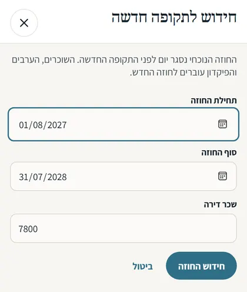
בלשונית חוזה לוחצים סיום החוזה, וממלאים:
שכר הדירה נעצר ביום שהדירה חוזרת. חיובים של חודשים שאחרי התאריך מבוטלים, והחודש האחרון מחושב לפי ימים. למשל, בחוזה שמתחיל ב-1 לחודש, שוכר שעוזב ב-10 לחודש בן 30 יום משלם שליש מהחודש. אם תורידו את הסימון, החודש האחרון נשאר מלא. אם השוכר נשאר אחרי סוף החוזה, החודשים הנוספים נרשמים באותו שכר דירה. חוב שנשאר נשאר בספרים, ומופיע ברשימת המשימות עד שנסגר. ומאותו יום מתחילה הספירה של 60 יום להחזרת הפיקדון.
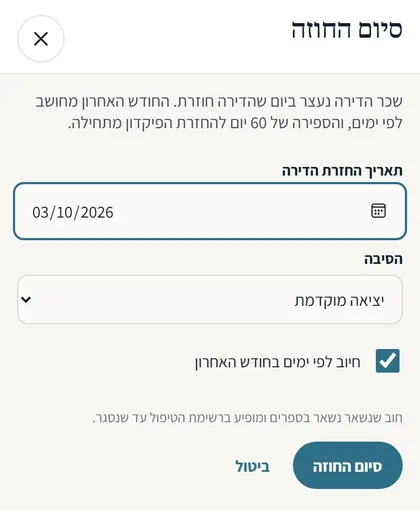
בלשונית תשלומים של הדירה יש כרטיס פיקדון: מוחזק עכשיו, התקרה בחוק, ואחרי הסיום גם להחזיר עד. שלושה כפתורים:
מהיום שהדירה חוזרת, ההחזרה מופיעה ברשימת המשימות: "להחזיר פיקדון של... עד...". בשבועיים האחרונים היא עולה למעלה ברשימה, ואם המועד עבר מופיע "עבר המועד בחוק להחזרת הפיקדון".
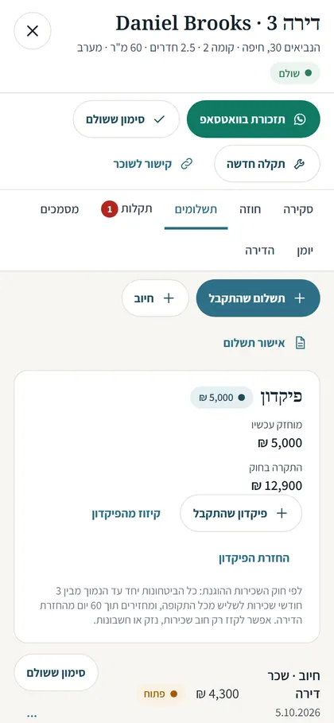
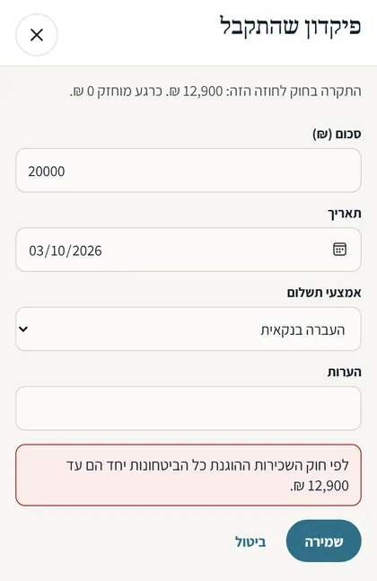
חוב לא נעלם כשהחוזה נגמר. בכרטיס הדירה, בלשונית סקירה, מופיע שוכרים קודמים, עניינים פתוחים, עם החוב, הזכות או הפיקדון שעוד מוחזק, והכפתור תשלומים שפותח את הספרים של החוזה הישן. החוב מופיע גם ברשימת המשימות: "שוכר שעזב עדיין חייב...".
איך סוגרים חוב של שוכר קודם:
ולהפך: אם השוכר שילם יותר ממה שחויב, מופיעה זכות לשוכר, וברשימת המשימות "לשוכר שעזב מגיע החזר". הכפתור החזר לשוכר רושם את ההחזר, עד גובה הזכות.
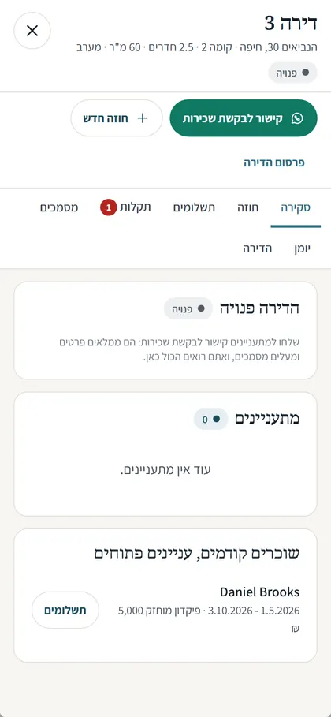
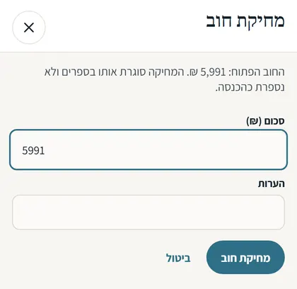
כשמסתיים חוזה בפינוי, בוחרים בסיום החוזה את הסיבה פינוי. ההליך המשפטי עצמו נעשה דרך עורך דין ובית המשפט, לא דרך המערכת. מה שהמערכת נותנת לכם: תיק ראיות לחוזה במסך דוחות, עם כל התשלומים, התקלות וההודעות של החוזה, לפי הסדר. זה סיכום של מה שתועד, ולא מסמך משפטי, אבל הוא חוסך לעורך הדין הרבה עבודה.
דירה התפנתה? בכרטיס הדירה, או במסך השכרה, לוחצים קישור לבקשת שכירות ושולחים למתעניינים. הקישור תקף 30 יום. המתעניין רואה את פרטי הדירה, ממלא שם, טלפון, מי יגור בדירה ותאריך כניסה, קורא את הודעת הפרטיות ומאשר אותה, ויכול להעלות תלושי שכר, דף חשבון או תעודה מזהה. כל קובץ נשמר מוצפן.
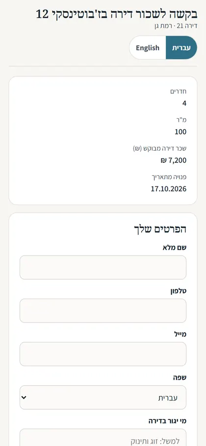
הבקשה מופיעה ברשימת המשימות, ובמסך השכרה בלוח המתעניינים לפי שלב: חדש, נוצר קשר, צפייה בדירה, הגיש בקשה, אושר, חתם. בכרטיס המתעניין, בתיק המתעניין, מעבירים שלב, קוראים איך בודקים שוכר, וכשמחליטים לוחצים על הכפתור חוזה עם ושם המתעניין. המתעניין הופך לשוכר.
פרסום הדירה מעביר לטופס פרסום מודעה באתר. רוצים עזרה במציאת שוכר? מתווך בעל רישיון מרשימת המתווכים באתר עושה זאת לפי הזמנת תיווך חתומה.
בחוזה צמוד אין מה לזכור: בכל מועד עדכון החיוב החודשי כבר מחושב לפי המדד. ומה קורה אם האתר של הלשכה המרכזית לסטטיסטיקה לא זמין ביום שהחיוב נרשם? החיוב נרשם לפי סכום הבסיס, ומסומן כמחכה למדד. ברשימת המשימות מופיע: "חיובים מחכים לנתון המדד של הלמ"ס. ההפרש יירשם לבד כשהנתון יגיע". כשהנתון מגיע, ההפרש המדויק נרשם לבד כחיוב נפרד, באותו תאריך.
במסך כספים, בלשונית הצמדה למדד, יש מחשבון: סכום, מתאריך ועד תאריך, וחישוב. מתחתיו חוזים צמודים, כל אחד עם מועד העדכון הבא והכפתור בדיקת הצמדה עכשיו. נוסח החוזה הוא הקובע.
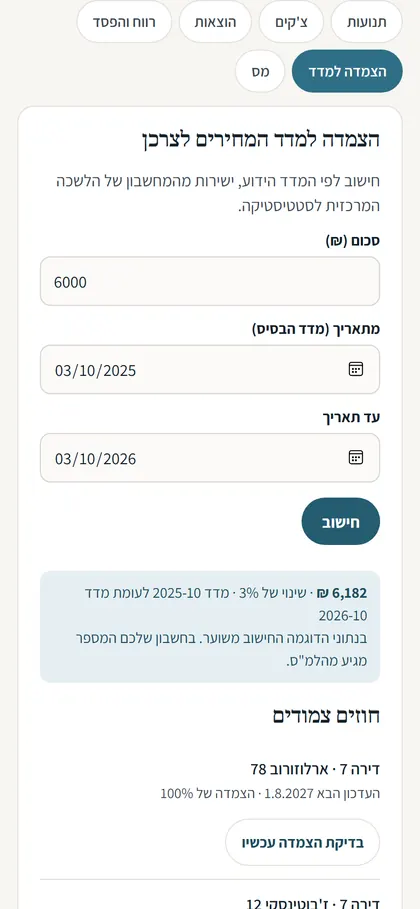
בסוף שנה:
המידע שלכם, תמיד. בכל רגע, במסך דוחות או בהגדרות, לוחצים הורדת כל הנתונים, ומקבלים קובץ אחד עם כל המידע: הנכסים, הדירות, האנשים, החוזים, כל שורות הספרים מאז ההתחלה, התקלות, היומן ורשימת המסמכים. את הקבצים עצמם מורידים מכל מסמך בנפרד. לעבודה באקסל יש קובץ לאקסל בדוחות.
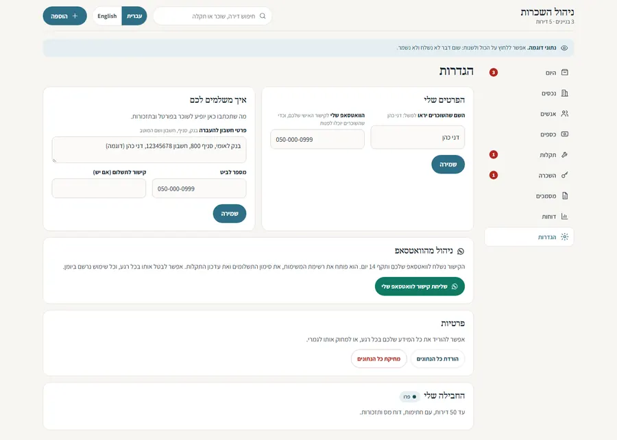
בהגדרות, תחת החבילה שלי, רואים את החבילה שלכם: חינם, פרו או עסקי. החבילה החינמית מתאימה למספר קטן של דירות, וחבילות פרו ועסקי לתיקים גדולים יותר ולחברות ניהול. המחירים והתנאים יופיעו כאן כשיפורסמו.
לא. השוכר משלם ישירות לכם, בהעברה, בהוראת קבע, בביט או בצ'קים. המערכת רושמת, מזכירה ומתאימה. השוכר יכול לדווח "שילמתי" מהקישור שלו, ואתם מאשרים.
כן. לכל שוכר יש שפה. העמוד האישי שלו, תרגום החוזה וכל הודעת וואטסאפ אליו כתובים בשפה שלו, ואתם ממשיכים לעבוד בעברית. בחוזה, הנוסח העברי הוא הקובע.
אפשר לחתום על חוזה שכירות בחתימה אלקטרונית. החתימה נשמרת יחד עם הנוסח המדויק שנחתם, התאריך והשעה. בעסקה מורכבת כדאי לעבור על החוזה עם עורך דין.
כל צ'ק כתשלום שהתקבל, באמצעי צ'ק, בתאריך שעליו. הצ'קים מחכים בלשונית צ'קים, ותקבלו תזכורת להפקיד כל אחד. צ'ק שחזר מסמנים בצ'ק חזר, עם עמלת הבנק.
לפי המדד הידוע, ממחשבון הלשכה המרכזית לסטטיסטיקה, מתאריך תחילת החוזה ועד מועד העדכון, באחוז ההצמדה שקבעתם. אם סימנתם לא יורד מתחת לסכום הבסיס, ירידה במדד לא מורידה את שכר הדירה.
לפי החוק, כל הביטחונות יחד עד הנמוך מבין שלושה חודשי שכירות לבין שליש משכר הדירה לכל התקופה. בטופס החוזה מופיעה התקרה המדויקת לחוזה שלכם, ותקבלו אזהרה אם עברתם אותה.
בעריכת החוזה, בדקו את מעקב תשלומים מתאריך. חיובים שכבר נרשמו לפני התאריך הזה מבטלים דרך ⋯ וביטול השורה, עם סיבה. בטופס חוזה חדש ובייבוא מאקסל, השדה מתמלא לבד ב-1 לחודש הנוכחי.
בסיום החוזה ממלאים את תאריך החזרת הדירה, ומשאירים מסומן חיוב לפי ימים בחודש האחרון. החודש האחרון מחושב לפי הימים שהשוכר היה בדירה, וחיובים מאוחרים יותר מבוטלים.
ללשונית מס יש אומדן לפטור ולמסלול 10%, ולמסך דוחות יש סיכום שנה וקובץ לאקסל לרואה החשבון. זה אומדן בלבד, והדיווח עצמו נעשה מול רשות המסים או דרך רואה חשבון.
רק אתם. הפרטים האישיים והקבצים נשמרים מוצפנים. בכל רגע אפשר להוריד את כל הנתונים בקובץ אחד, או למחוק הכול. אם חבילה בתשלום מסתיימת, שום דבר לא נמחק.